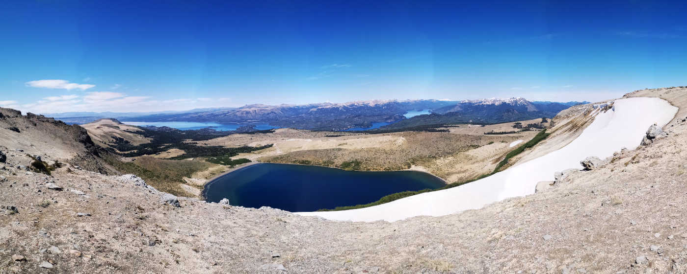

Vulkane, Araucarias und Strände - Reiseführer Villa Pehuenia -
Das kleine Dorf Villa Pehuenia im Nordwesten von Neuquén, welches abseits der internationalen Touristenströmen liegt, entführt einen in das Patagonien der Argentinier. An den kleinen Stränden des Aluminé Sees tummeln sich argentinische Familien beim Grillen in schönster Natur.
Trotz seiner Unbekanntheit lohnt sich ein Abstecher nach Villa Pehuenia. Die Gegend bietet neben den einzigartigen Araucaria Bäumen, die einen in die Welt der Dinosaurier bringen, auch einsame Strände am See und die Möglichkeit einen Vulkan zu besteigen, auf dessen Spitzen man zwischen Chile und Argentinien hin und her spazieren kann.

ToDo
1. Circuito Pehuenia – Entdecke die Araucaria Araucana Bäume
Die Araucaria Araucana Bäume sind eine Koniferenart, die es nur auf der Südhalbkugel zu bestaunen gibt. Besonders in Chile und Argentinien besitzen diese Bäume, welche eine Kombination aus Laub- und Nadelbaum ist mit immergrünen, festen Blättern, eine große Verbreitung. Die einzigartige Form der Bäume lässt einen direkt an eine Dinowelt denken und so ist ein Roadtrip auf dem Circuito Pehuenia, welcher gesäumt von diesen Bäumen ist, eine Art Zeitreise in eine andere Epoche.
Der Circuito Pehuenia ist ungefähr 60 km lang und man sollte für diesen einen kompletten Tag mit dem Auto einplanen. Die Straßen sind zumeist nicht asphaltiert, sodass man langsam fahren muss, wodurch man die Landschaft umso mehr genießen kann. Ein Auto kann man am besten schon in Neuquén oder Bariloche mieten, da auch die Anreise nach Villa Pehuenia am einfachsten mit dem Mietwagen ist.
Start der Route ist in Villa Pehuenia, von wo man dem Lago Moquehue bis nach Moquehue folgt. Von dort geht es nach Ñorquinco und dem Lago Ñorquinco. Im Anschluss folgt man dem Fluss, bis man zum Piedra Pintada kommt, wo man bald darauf auf die Ruta 23 stößt. Über die Ruta 23 geht es dann bis zum Lago Aluminé. Von Litrán aus kommt man dann über die Ruta 13 zurück nach Villa Pehuenia. Bei der ganzen Tour ist der Weg das Ziel, sodass man möglichst viele Pausen einlegen sollte.
♦ ♦ ♦
2. Batea Mahuida Vulkan
Der nicht aktive Vulkan Batea Mahuida, der genau auf der Grenze zwischen Chile und Argentinien liegt, verzaubert einen mit einer in unterschiedlichsten Blautönen schimmernden Lagune in seinem Krater. Am höchsten Punkt des Vulkanes, welcher noch eine kurze Wanderung von der Lagune entfernt liegt, hat man einen Blick auf die vielen anderen Vulkane der Umgebung. Dort kann man auch ohne Grenzkontrolle von Argentinien nach Chile und zurück spazieren, oder besser gesagt man weiß auf dem Gipfel eigentlich nicht in welchem Land man sich gerade offiziell befindet.

Um von Villa Pehuenia zum Batea Mahuida zu gelangen empfiehlt sich erneut ein Leihwagen. Mit diesem fährt man an der Ruta 13 in Richtung chilenischer Grenze. Nach ungefähr 8 km gibt es eine Abbiegung nach rechts, die zum Skigebiet des Batea Mahuida führt. Diese nimmt man auch um zum Gipfel des Vulkans zu gelangen. Ungefähr nach 200m auf der Straße ist ein Schlagbaum, an welchem man eine kleine Gebühr von ein paar hundert Pesos als Eintritt bezahlt (umgerechnet zwischen drei und fünf Euro). Falls man der spanischen Sprache mächtig ist, erhält man dort auch weitere Informationen zur Umgebung und zu weiteren Aussichtspunkten. Von dort folgt man der Straße soweit wie möglich (In Abhängigkeit der Straßen und Wetterbedingungen kann man bis zur Lagune fahren).
An der Lagune angekommen kann man dem Lagunenufer folgen, bis man auf der fast gegenüberliegenden Seite der Lagune ist, von wo man über ein Geröllfeld auf die Spitze des Kraters gelangen kann. Gutes Schuhwerk ist dafür notwendig, da man oft über loses Gestein laufen muss. Auf der Spitze des Kraters ist man plötzlich auf einer Art Hochplateau und kann zwischen Chile und Argentinien hin und her spazieren.
Auf dem Weg hin zu Lagune gibt es eine Abzweigung, von welcher man zu einem Aussichtspunkt gelangt. Der Name dessen ist „Mirador de las Antennas“, von welchem man einen guten Ausblick auf Villa Pehuenia und den Lago Aluminé hat.
♦ ♦ ♦
3. Strände entdecken
Nach ein paar anstrengenden Tagen braucht man auch mal eine Pause. Dafür bieten sich die vielen Strände in und um Villa Pehuenia an. Zum einem bietet der Lago Moquehue einen längeren Strand im Bereich des Campingplatzes El Verde. Dort kann man auch Kayaks mieten.
Jedoch gibt es auch direkt in Villa Pehuenia wunderschöne kleine Buchten. Der Playita Radal-Co bietet neben einer Windstille auf Grund seiner Lage auch den Blick auf eine kleine Insel. Ansonsten kann man auf der kompletten Halbinsel beim Playita Radal-Co weitere kleine Strände entdecken und es lohnt sich einfach etwas rumzulaufen, bis man seinen Lieblingsstrand gefunden hat.
♦ ♦ ♦

Good to know
Anreise nach Villa Pehuenia
Es gibt die Möglichkeit mit dem Bus von Neuquén Stadt, Aluminé oder San Martín de los Andes nach Villa Pehuenia zu gelangen. Die Fahrt von San Martin de los Andes dauert ungefähr viereinhalb Stunden und wird von campanados ** angeboten. Alternativ kann man von Neuquén Stadt einen Bus von Lolomove** nehmen der sieben Stunden benötigt.
Anstatt des Busses lohnt sich jedoch fast besser ein Auto in Neuquén oder Bariloche zu mieten, da man in Villa Pehuenia ein Auto benötigt, wenn man überteuerte Touren vermeiden möchte. Finde hier mehr Infos, wie man ein Auto mietet und was man dabei beachten muss.
Von A nach B in Villa Pehuenia
Wenn man kein eigenes Auto in Villa Pehuenia hat bleibt einem nur die Möglichkeit Taxis zu nutzen. Kurze Distanzen zum Restaurant in der Stadt kann man zu Fuß gehen. Es empfiehlt sich allerdings einen Leihwagen in Villa Pehuenia zu haben.
Unterkünfte in Villa Pehuenia
Es gibt das Hostel Andino** falls man allein unterwegs ist und Anschluss sucht. Alternativ gibt es zahlreiche kleine Pensionen, die Zimmer für ungefähr 30 bis 40 Euro vermieten. In diesen ist es allerdings schwer Anschluss zu finden.
Ich selbst habe vor Ort in der Hostería La Balconada** übernachtet, welches eine wunderschöne Aussicht hatte, ein gutes Frühstück bot und trotzdem nur ungefähr 35 € pro Nacht im Doppelzimmer gekostet hat.
Essen und Trinken in Villa Pehuenia
Es gibt zahlreiche Restaurants in Villa Pehuenia, wobei die Qualität des Essens überschaubar ist. Trotz guter Google Rezessionen, kann man das Essen nicht mit dem in Bariloche oder Buenos Aires vergleichen. Recht gute Burger bekommt man in Hoppingill** oder einfache Snacks in Mandra Resto-Bar**.
Wer einfach an einem Strand ein kühles Bier genießen möchte, der sollte zur El Verde Bar de Playa** gehen. Eigentlich handelt es sich nur um einen kleinen Verkaufstand, welcher aber wunderschön direkt am Strand gelegen ist und einem zum Entspannen einlädt.

Marys Meinung

**Das genannte Unternehmen ist eine Empfehlung meinerseits. Ich habe KEINE Gegenleistung von diesem erhalten.